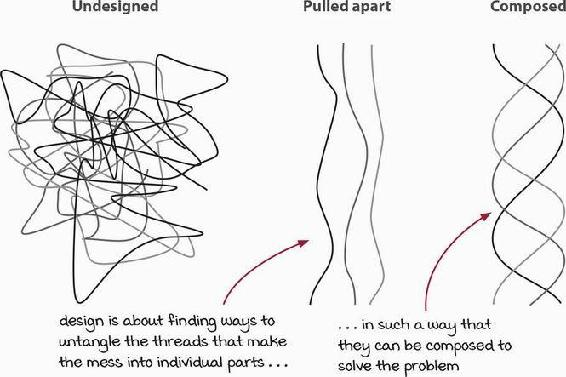

Hyland Clinician Window : OOP/Design Quotes
Created by Damon German, last modified on Jan 26, 2023
The fact remains: Good design is testable, and design that isn’t testable is bad. (Feathers 139)
Never shoot for the best design, but rather the least worst design. (Mark Richards and Neal Ford)
Any fool can write code that a computer can understand. Good programmers write code that humans can understand. (Fowler 15)
Simplicity and elegance are unpopular because they require hard work and discipline to achieve and education to be appreciated. Edsger W. Dijkstra
Object-oriented design is a process of identifying relevant objects, factoring them into classes, organizing hierarchically, and establishing dynamic collaborations among the objects. (Rakesh 1)
Software's Primary Technical Imperative: Managing Complexity (McConnell 77)
Software design is sloppy because a good solution is often only subtly different from a poor one, and because it's hard to know when your design is "good enough." (McConnell 75)
Design: Using one’s aesthetic sense to guide programming choices to improve the ease of coding, testing, and maintaining software. (2021 Normand)
Treat design as a wicked, sloppy, heuristic process. Don’t settle for the first design that occurs to you. Collaborate. Strive for simplicity. Prototype when you need to. Iterate, iterate, and iterate again. You’ll be happy with your designs. (McConnell 119)
To fulfill its purpose, software must be soft—that is, it must be easy to change. (2017 Martin 14)
Our main thesis is that object-oriented design is the most promising technique now known for attaining the goals of extendibility [extensibility] and reusability. (Meyer 51)
First, make it work, then make it right, (2008 Martin 268, 270) then make it fast. (Kent Beck?)
As developers, we are pretty good at getting things done. However, that still leaves us a far cry from treating our profession as a craft worthy of deep understanding. I suspect this may be part of the reason why 80% of software development costs occur after a product has gone to production, even in the corporate world. G. Hoffman Amazon reviewer for - Multi-Paradigm Design for C++
The long-term health, adaptability, and viability of a project rely on sound management of dependencies. A mess of spaghetti-like interdependencies will occur if developers create classes that reference each other without careful consideration, which can seriously affect a team’s ability to deliver business value in a consistent, predictable fashion. (McLean Hall, Gary)
Inheritance is the strongest, and most rigid, of all the source code relationships; consequently, it should be used with great care. (2017 Martin 88)
Duplication may be the root of all evil in software. Many principles and practices have been created for the purpose of controlling or eliminating it. (2008 Martin 48)
Test code is just as important as production code. It is not a second-class citizen. It requires thought, design, and care. It must be kept as clean as production code. (2009 Martin 124)

{kind=link}
{kind=link}